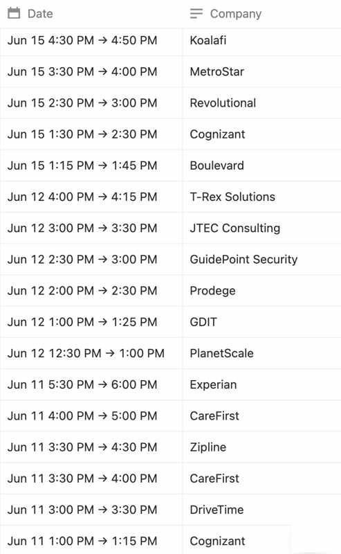
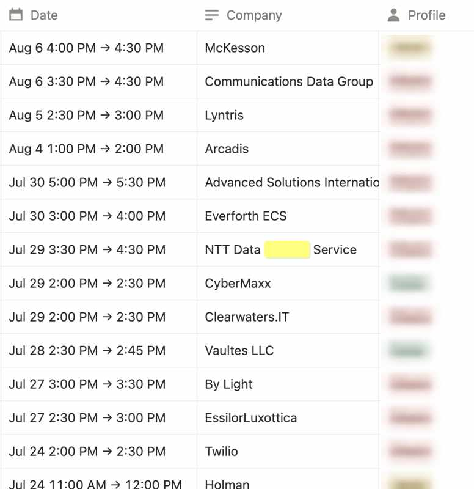
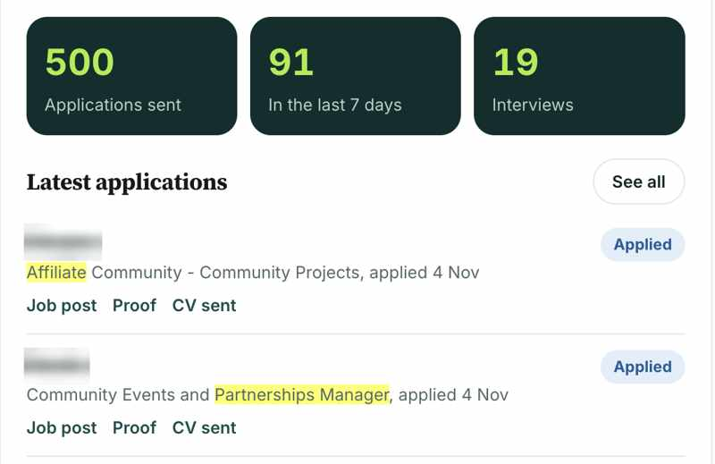
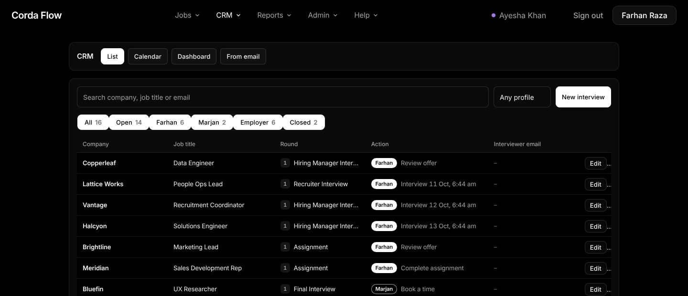

Web apps, AI agents and automations for teams that need every application, email and interview handled. I write the software by describing it to Claude AI, test every screen myself, then run the operation on it.
A short walk through my work: the job platform I built with Claude AI, the pipeline that feeds it, the checks that stop bad jobs, and the results for real clients.
I turn a slow manual task into a web app or automation, coded with Claude AI and Claude Code. React, Node.js, PostgreSQL, deployed on Render and Cloudflare.
I put the tool in front of a real team or client the same week, and I run the operation on it myself: sourcing, applying, email, follow-ups and scheduling.
Every tool records what happened, so the result is a number, not a claim: applications sent, interviews booked, jobs filtered, clients hired.
The job application platform my team works in every day: sourcing, applying, manager review and an interview CRM. AI agents read each posting and tailor every resume and cover letter.
Each client logs in and sees every application and interview from their own job search, live.
Searches LinkedIn, Indeed and nine ATS platforms, checks each job against the team's rules and sends in only valid ones.
Cold email outreach for companies. It finds the right person's email, writes a draft to match that lead, and sends it from the client's own email account, with daily limits and inbox warm-up.
Cuts one long video into short vertical clips with captions. AI reads the transcript and picks the best moments. Built for a client.
A ticket board where AI reads every ticket and flags the risk, so urgent ones are handled first.
Job Finder turns a LinkedIn post into the company's own careers page link. Job Aggregator pulls four job sources into one clean feed.
My business website, coded with Claude AI: 26 SEO pages with schema markup, a live product demo, a client login and a contact form with email alerts.
The interview log I kept in Notion, and a real client's login. Client names are blurred.




| Where | My role | Result |
|---|---|---|
| Robiq (my business) | Founder: client job searches, website, software | SEO lead hired in a month; 500 applications and 19 interviews for another client |
| Corda Digital | Operations Lead: built and ran the team platform | 47% of bad listings stopped; 2,219 jobs and 771 documents |
| CNT Consulting | Business Development, promoted to Project Manager | 10,132 applications, 88 interview requests, 3 clients hired in under a month |
| US software engineer | Virtual Assistant: job search, inbox, scheduling | Hired at Twilio |
AI agents, Claude AI, ChatGPT, LLM prompts, n8n, workflow automation, APIs
Vibe coding with Claude Code, React, Node.js, PostgreSQL, websites, GitHub, Render, Cloudflare
Team management, SOPs, KPI reporting, inbox and calendar management, scheduling, CRM
Job sourcing, application tracking, interview coordination, recruiter follow-ups
Cold email, lead research, Apollo.io, Hunter.io, HubSpot
Google Search Console, GA4, schema markup, SEO pages
Tell me what is slow or breaking in your team. I will show you what I would build and how we would measure it.